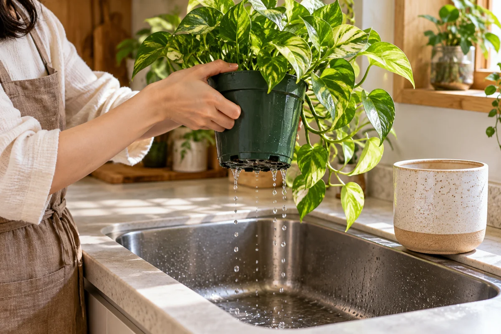

今日やることは、この3つ
- 白い部分を撮り、ふわふわした膜か固い付着物かを見る。
- 土の湿り気と、受け皿・鉢カバーの残り水を確認する。
- 表面の手入れと置き方を見直し、株の元気も別に確認する。
水やりや写真を記録して変化を振り返りたい方へ。RELOHAでできることを見る ↓
① 白い＝全部カビ、ではない
湿った用土では、白〜灰色の菌類が表面に広がることがあります。一方、水や肥料由来の成分は白い固い膜のように付着する場合があります。写真や色だけで断定せず、土以外の鉢の縁にも付いていないか確認します。［1］［2］
② どこが白いかで、確認を分ける
| 気になる状態 | 先に確認すること |
|---|---|
| 土にふわふわした白〜灰色の膜 | 菌類の可能性。表面が湿り続けていないか確認。 |
| 土や鉢の縁に固い白い付着物 | 水や肥料由来の成分の可能性。施肥の履歴も確認。 |
| 葉にも白いものがある | 土の問題と同じと決めず、葉裏や虫の有無も見る。 |
| 白いものに加え株がしおれる | 白い部分だけでなく、用土と株元の状態も確認。 |
この表は相談前の整理用です。「白いから無害」「白いから病気」と結論を急がないのが出発点です。
③ 表面を手入れし、湿り続ける条件を見直す
表面に菌類の膜ができた場合は、膜とその周辺の用土の上層を取り除く方法が紹介されています。根を掘り返す作業とは分け、鉢同士の間にも空気が通る配置に。水やりの間に表面が乾くかも観察します。［1］
乾燥への強さは植物ごとに違うため、鉢全体を無理にカラカラにはしません。水の判断は水やりのタイミングと量へ。固い析出物なら肥料の使用量・頻度をラベルと照らし合わせます。［2］

④ しおれや株元の傷みは、別に調べる
土が湿っているのにしおれ、根や株元が黒く柔らかい場合は、根の不調など別の問題も考えます。白い膜だけを取り除いて終わりにせず、根腐れが心配なときの確認へ進んでください。［3］
記録例は「白い部分は鉢の右側だけ。土は湿っている。葉は普段と同じ。表面を手入れして鉢間隔を広げた」。同じ位置から写真を撮り、広がりや繰り返しを比較します。小さな飛ぶ虫もいるならコバエの確認と対策もどうぞ。
よくある質問
白いものが出たら、全部植え替える？
表面だけの菌類と、根や株元の不調は分けて確認します。見た目だけで直ちに全用土の交換と決めず、株の状態も見ましょう。
取り除いても繰り返すのはなぜ？
表面が湿り続ける条件が残っている可能性があります。水やりの判断、鉢カバーの残り水、鉢周りの通気を見直します。
白い固いものにも同じ対策でいい？
水や肥料の成分が析出したものなら、菌類とは違う問題です。使用中の水や肥料の履歴を確認し、不明なら写真を添えて購入店に相談してください。
参考情報と編集方針
大学の園芸情報を確認し、RELOHA編集部が家庭で確認しやすい順に整理しました。種類ごとの管理条件は購入店・生産者の案内を優先してください。
- メリーランド大学：室内植物の土の藻類と菌類湿った用土の表面の菌類、通気、表面の手入れ
- メリーランド大学：ミネラルと肥料の析出白い析出物と肥料ラベルの確認
- メリーランド大学：冬の室内植物の問題湿った土でもしおれる場合の根・株元の不調
出典確認日：2026年11月07日。RELOHAを運営する編集部による自社記事です。画像は実証・診断写真ではありません。海外の薬剤や気候条件をそのまま日本向けに推奨していません。